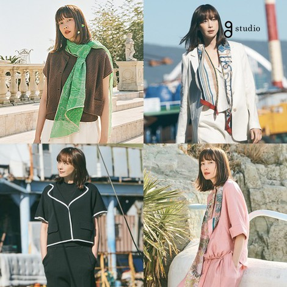

문자열객체 - 탭메뉴 이미지 갤러리
문자열객체를 활용해 탭메뉴 5개를 클릭시 해당 문자열값을 변수에 담아 큰 이미지가 변경될 수 있도록 src주소값을 변경한다.
- 독립적인 콘텐츠를 만들기 위한 article태그 박스를 만든다
- 썸네일 이미지메뉴를 만들기 위한 ul, li태그를 작성한다.
- 큰사진이 보이도록 div태그를 작성한다.
- script 문자열객체를 통해 썸네일 이미지 클릭시 해당 src값(변수1)을 변수에 담아 큰사진(변수2)의 src속성값에 대입하여 이미지가 변경되도록 한다.
이미지갤러리
예제갤러리
